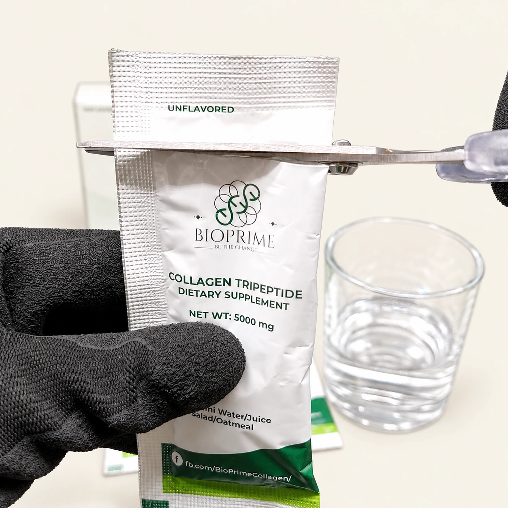
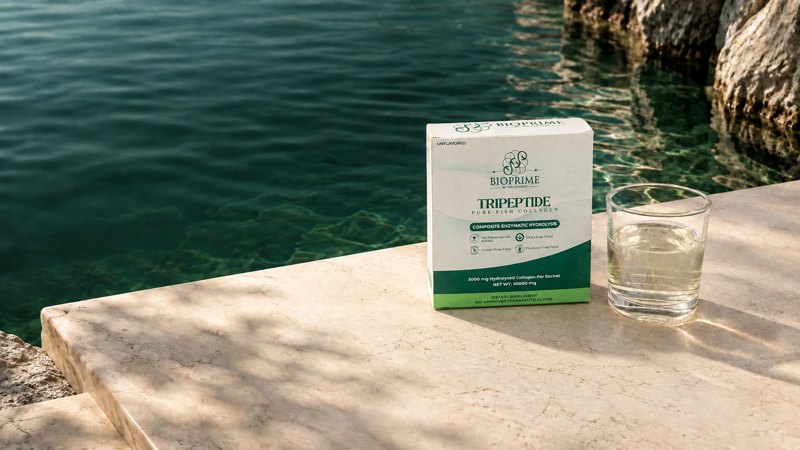
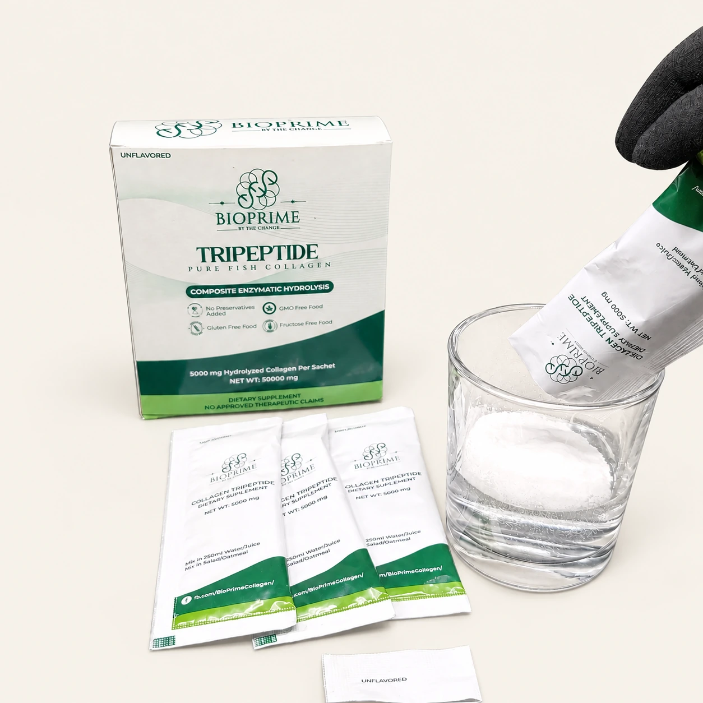
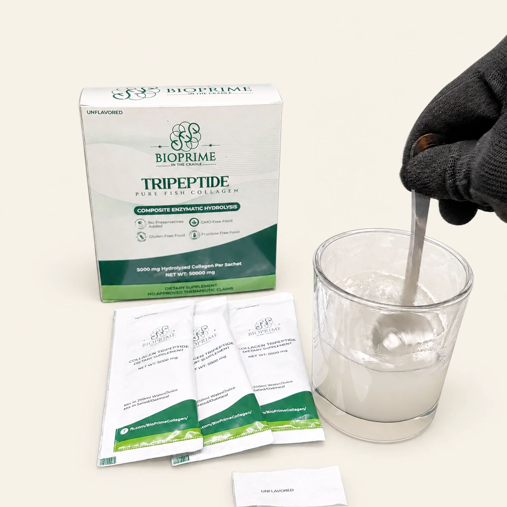

01
Cut
Open one 5 g sachet.

MARINE COLLAGEN · ONE INGREDIENT
Meet BioPrime. Marine collagen tripeptide powder, made for a simpler approach to self-care.
Order on Messenger₱640 / 10 sachets · Cash on delivery available
Shipping charged separately.
A LITTLE DISCOVERY
Four questions. A moment to consider what matters to you.
Optional · No email needed · A guide to preferences, not medical suitability.
01 / THE INGREDIENT
Hydrolyzed collagen tripeptide powder from fish. One ingredient, in a daily 5 g sachet.
No fillers. No flavoring. No sugar.
A CLOSER LOOK
Peptides are chains of amino acids.
A tripeptide is a short chain of three.
Example of a longer peptide
A tripeptide
Illustration of peptide chain lengths. Collagen peptide powders contain varying lengths, including tripeptides.
Research has explored how collagen peptides support skin hydration, elasticity and appearance. In a 12-week study, women taking a fish-derived collagen ingredient containing tripeptides showed improvements in hydration, wrinkles and elasticity. Separate clinical research with specific collagen peptides reported improvements in skin hydration and the dermal collagen network.
Kim et al., 2018 — fish-derived collagen with tripeptides and skin health ↗Asserin et al., 2015 — collagen peptides, hydration and the dermal collagen network ↗A straightforward addition
to your everyday routine.

Open one 5 g sachet.

Pour into 250 ml of drinking water.

Stir and make it part of your day.
Prefer it with food? Mix one sachet into oatmeal or salad. Store in a cool, dry place.
03 / CHOOSE WITH CONFIDENCE
One ingredient, with the fish source and daily serving plainly stated.
Food supplement registration
FR-4000015397694.
No approved therapeutic claims.
Ask our automated assistant about BioPrime. Request personal assistance whenever you need more help.
Ask about BioPrime ↗A FEW THINGS YOU MAY WONDER
Hydrolyzed collagen tripeptide powder from fish. The formula has no fillers, flavoring, or sugar.
Ten sachets of 5 g each. At one sachet daily, one box provides ten daily servings.
Take one sachet daily at a convenient time. An evening routine is optional; bedtime is not required.
No flavoring is added. Unflavored does not necessarily mean tasteless or odorless.
BioPrime is intended for adults and is fish-derived. If you are pregnant, seek advice from your physician, as directed on the packaging.
Select Order on Messenger to continue with our automated ordering assistant. Cash on delivery is available. You can request personal assistance with your order.
Nationwide delivery is available. Shipping is charged separately at the courier’s rate. Message us to check your address and shipping charge.
We do not promise a set timeline or a particular visible result. BioPrime is a food supplement with no approved therapeutic claims.
YOUR DAILY RITUAL STARTS HERE
Marine collagen tripeptide powder.
One ingredient. Ten daily servings.
BIOPRIME / 10 SACHETS × 5 g
Cash on delivery available.
Nationwide delivery.
Shipping charged separately at the courier’s rate.
Continue in Messenger to place your order or ask a question.